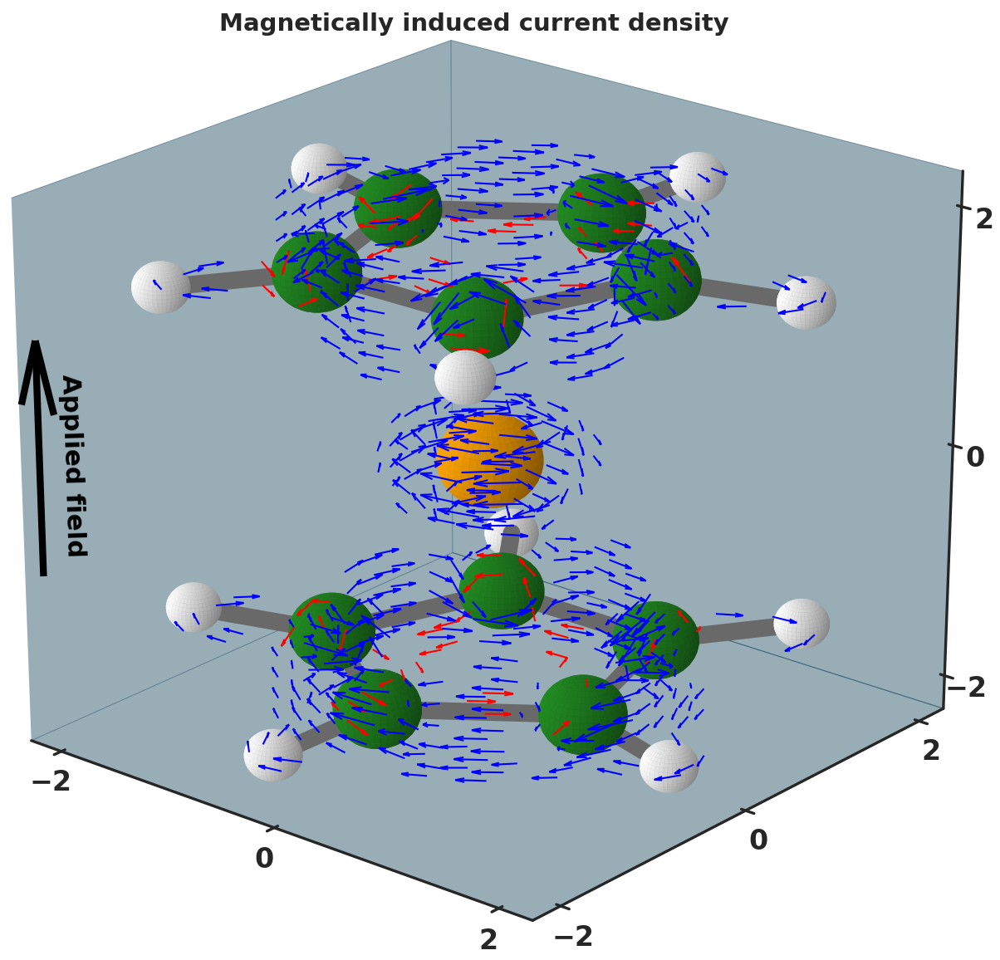

Entry 17¶
Induced current due to the external magnetic field applied along longitudinal axis¶
Marco Fusè
Nuclear Magnetic Resonance (NMR) spectroscopy is a technique widely used in chemistry for the investigation of molecular systems, from small molecules to protein systems.
In this technique, information on the molecular structure are achieved through the observation of the local magnetic field at nuclei, since every equivalent nucleus has different intramolecular field depending the surrounding nuclei. During the analysis, the molecules are expose to an external magnetic field that induces the electronic motion, thereby the magnetically induced current density. At molecular level, an external field can either induce a “classical” current named as diatropic either an opposite current called “paratropic”. Benzene is a typical example of inducing both diatropic (outer) and paratropic (inner) currents under the externally applied field. The net current flux permits to classify molecules, for instance, as aromatic or antiaromatic. Visualization of the current flux helps to identify unexpected values in the NMR experiments and/or to locate aromatic rings in molecules. The simplest and most intuitive method for graphically depicting vector field consist in representing vectors in the form of glyphs, such as lines or arrows, known as hedgehog representation. In this representation, the direction of the glyphs corresponds to the one of the related vector, whereas their color and/or size is a function of the related vector’s magnitude. Herein, the induced current density in a ferrocene under the external field applied along the z axis of the molecule (ie., orthogonal to the two cyclopentadienyl rings) is depicted. The molecule is represented in the ball and stick model, with carbon (green), hydrogen (white) and iron (orange) as spheres . For clarity purpose, high threshold currents were filtered to produce usable figure, yet maintaining the features of the original data set. The diatropic (outer) and paratropic (inner) currents are shown as blue and red arrows, highlighting the aromatic nature of the two cyclopentadienyl rings. The discretized volumetric dataset has been computed with the GIMIC software.
Code and data: 1